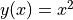
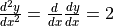
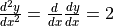
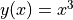

tf.GradientTape 詳解¶
tf.GradientTape 的出現是 TensorFlow 2 最大的變化之一。其以一種簡潔優雅的方式，爲 TensorFlow 的即時執行模式和圖執行模式提供了統一的自動求導 API。不過對於從 TensorFlow 1.X 過渡到 TensorFlow 2 的開發人員而言，也增加了一定的學習門檻。本章即在 第一章「自動求導機制」一節 的基礎上，詳細介紹 tf.GradientTape 的使用方法及機制。
基本使用¶
tf.GradientTape 是一個記錄器，能夠記錄在其上下文環境中的計算步驟和操作，並用於自動求導。其使用方法分爲兩步：
使用 with 語句，將需要求導的計算步驟封裝在
tf.GradientTape的上下文中；使用
tf.GradientTape的gradient方法計算導數。
回顧 第一章「自動求導機制」一節 所舉的例子，使用 tf.GradientTape() 計算函數  在  時的導數：
時的導數：
import tensorflow as tf
x = tf.Variable(initial_value=3.)
with tf.GradientTape() as tape: # 在 tf.GradientTape() 的上下文内，所有计算步骤都会被记录以用于求导
y = tf.square(x)
y_grad = tape.gradient(y, x) # 计算y关于x的导数
print(y, y_grad)
在這裡，初學者往往迷惑於此處 with 語句的用法，即「爲什麼離開了上下文環境， tape 還可以被使用？」。這樣的疑惑是有一定道理的，因爲在實際應用中，with 語句大多用於對資源進行訪問的場合，保證資源在使用後得到恰當的清理或釋放，例如我們熟悉的文件寫入：
with open('test.txt', 'w') as f: # open() 是文件资源的上下文管理器，f 是文件资源对象
f.write('hello world')
f.write('another string') # 报错，因为离开上下文环境时，资源对象 f 被其上下文管理器所释放
在 TensorFlow 2 中，tf.GradientTape 儘管也可以被視爲一種「資源」的上下文管理器，但和傳統的資源有所區別。傳統的資源在進入上下文管理器時獲取資源對象，離開時釋放資源對象，因此在離開上下文環境後再訪問資源對象往往無效。而 tf.GradientTape 則是在進入上下文管理器時新建記錄器並開啓記錄，離開上下文管理器時讓記錄器停止記錄。停止記錄不代表記錄器被釋放，事實上，記錄器所記錄的信息仍然保留，只是不再記錄新的信息。因此 tape 的 gradient 方法依然可以使用，以利用已記錄的信息計算導數。我們使用以下示例代碼來說明這一點：
import tensorflow as tf
x = tf.Variable(initial_value=3.)
with tf.GradientTape() as tape: # tf.GradientTape() 是上下文管理器，tape 是记录器
y = tf.square(x)
with tape.stop_recording(): # 在上下文管理器内，记录进行中，暂时停止记录成功
print('temporarily stop recording')
with tape.stop_recording(): # 在上下文管理器外，记录已停止，尝试暂时停止记录报错
pass
y_grad = tape.gradient(y, x) # 在上下文管理器外，tape 的记录信息仍然保留，导数计算成功
在以上代碼中， tape.stop_recording() 上下文管理器可以暫停計算步驟的記錄。也就是說，在該上下文內的計算步驟都無法使用 tape 的 gradient 方法求導。在第一次調用 tape.stop_recording() 時， tape 是處於記錄狀態的，因此調用成功。而第二次調用 tape.stop_recording() 時，由於 tape 已經離開了 tf.GradientTape 上下文，在離開時 tape 的記錄狀態被停止，所以調用失敗，報錯： ValueError: Tape is not recording. （記錄器已經停止記錄）。
監視機制¶
在 tf.GradientTape 中，通過監視（Watch）機制來決定 tf.GradientTape 可以對哪些變量求導。默認情況下，可訓練（Trainable）的變量，如 tf.Variable 會被自動加入 tf.GradientTape 的監視列表，從而 tf.GradientTape 可以直接對這些變量求導。而另一些類型的張量（例如 tf.Constant ）則不在默認列表中，若需要對這些張量求導，需要使用 watch 方法手工將張量加入監視列表中。以下示例代碼說明了這一點：
import tensorflow as tf
x = tf.constant(3.) # x 为常量类型张量，默认无法对其求导
with tf.GradientTape() as tape:
y = tf.square(x)
y_grad_1 = tape.gradient(y, x) # 求导结果为 None
with tf.GradientTape() as tape:
tape.watch(x) # 使用 tape.watch 手动将 x 加入监视列表
y = tf.square(x)
y_grad_2 = tape.gradient(y, x) # 求导结果为 tf.Tensor(6.0, shape=(), dtype=float32)
當然，如果你希望自己掌控需要監視的變量，可以將 watch_accessed_variables=False 選項傳入 tf.GradientTape ，並使用 watch 方法手動逐個加入需要監視的變量。
高階求導¶
tf.GradientTape 支持嵌套使用。通過嵌套 tf.GradientTape 上下文管理器，可以輕鬆地實現二階、三階甚至更多階的求導。以下示例代碼計算了 在 時的一階導數 dy_dx 和二階導數 d2y_dx2 ：
import tensorflow as tf
x = tf.Variable(3.)
with tf.GradientTape() as tape_1:
with tf.GradientTape() as tape_2:
y = tf.square(x)
dy_dx = tape_2.gradient(y, x) # 值为 6.0
d2y_dx2 = tape_1.gradient(dy_dx, x) # 值为 2.0
由於  ，  ，故期望值爲
，  ，故期望值爲 dy_dx = 2 * 3 = 6 ， d2y_dx2 = 2 ，可見實際計算值與預期相符。
我們可以從上面的代碼看出，高階求導實際上是通過對使用 tape 的 gradient 方法求得的導數繼續求導來實現的。也就是說，求導操作（即 tape 的 gradient 方法）和其他計算步驟（如 y = tf.square(x) ）沒有什麼本質的不同，同樣是可以被 tf.GradientTape 記錄的計算步驟。
持久保持記錄與多次求導¶
默認情況下，每個 tf.GradientTape 的記錄器在調用一次 gradient 方法後，其記錄的信息就會被釋放，也就是說這個記錄器就無法再使用了。但如果我們要多次調用 gradient 方法進行求導，可以將 persistent=True 參數傳入 tf.GradientTape ，使得該記錄器持久保持記錄的信息。並在求導完成後手工使用 del 釋放記錄器資源。以下示例展示了用一個持久的記錄器 tape 分別計算 在 時的導數，以及  在  時的導數。
時的導數。
import tensorflow as tf
x_1 = tf.Variable(3.)
x_2 = tf.Variable(2.)
with tf.GradientTape(persistent=True) as tape:
y_1 = tf.square(x_1)
y_2 = tf.pow(x_2, 3)
y_grad_1 = tape.gradient(y_1, x_1) # 6.0 = 2 * 3.0
y_grad_2 = tape.gradient(y_2, x_2) # 12.0 = 3 * 2.0 ^ 2
del tape
圖執行模式¶
在圖執行模式（即使用 tf.function 封裝計算圖）下也可以使用 tf.GradientTape 。此時，其與 TensorFlow 1.X 中的 tf.gradients 基本等同。詳情見 自动求导机制的计算图对比 * 。
性能優化¶
由於 tf.GradientTape 上下文中的任何計算步驟都會被記錄器所記錄，因此，爲了提高 tf.GradientTape 的記錄效率，應當儘量只將需要求導的計算步驟封裝在 tf.GradientTape 的上下文中。如果需要在中途臨時加入一些無需記錄求導的計算步驟，可以使用本章第一節介紹的 tape.stop_recording() 暫時停止上下文記錄器的記錄。同時，正如我們在本章「高階求導」一節所介紹的那樣，求導動作本身（即 tape 的 gradient 方法）也是一個計算步驟。因此，一般而言，除非需要進行高階求導，否則應當避免在 tf.GradientTape 的上下文內調用其 gradient 方法。這會導致求導操作本身被 GradientTape 所記錄，從而造成效率的降低。
import tensorflow as tf
x = tf.Variable(3.)
with tf.GradientTape(persistent=True) as tape:
y = tf.square(x)
y_grad = tape.gradient(y, x) # 如果后续并不需要对 y_grad 求导，则不建议在上下文环境中求导
with tape.stop_recording(): # 对于无需记录求导的计算步骤，可以暂停记录器后计算
y_grad_not_recorded = tape.gradient(y, x)
d2y_dx2 = tape.gradient(y_grad, x) # 如果后续需要对 y_grad 求导，则 y_grad 必须写在上下文中
實例：對神經網絡的各層變量獨立求導¶
在實際的訓練流程中，我們有時需要對 tf.keras.Model 模型的部分變量求導，或者對模型不同部分的變量採取不同的優化策略。此時，我們可以通過模型中各個 tf.keras.layers.Layer 層的 variables 屬性取出層內的部分變量，並對這部分變量單獨應用優化器。以下示例展示了使用一個持久的 tf.GradientTape 記錄器，對前節 基礎範例：多層感知器（MLP） 中多層感知機的第一層和第二層獨立進行優化的過程。
import tensorflow as tf
from zh.model.mnist.mlp import MLP
from zh.model.utils import MNISTLoader
num_epochs = 5
batch_size = 50
learning_rate_1 = 0.001
learning_rate_2 = 0.01
model = MLP()
data_loader = MNISTLoader()
# 声明两个优化器，设定不同的学习率，分别用于更新MLP模型的第一层和第二层
optimizer_1 = tf.keras.optimizers.Adam(learning_rate=learning_rate_1)
optimizer_2 = tf.keras.optimizers.Adam(learning_rate=learning_rate_2)
num_batches = int(data_loader.num_train_data // batch_size * num_epochs)
for batch_index in range(num_batches):
X, y = data_loader.get_batch(batch_size)
with tf.GradientTape(persistent=True) as tape: # 声明一个持久的GradientTape，允许我们多次调用tape.gradient方法
y_pred = model(X)
loss = tf.keras.losses.sparse_categorical_crossentropy(y_true=y, y_pred=y_pred)
loss = tf.reduce_mean(loss)
print("batch %d: loss %f" % (batch_index, loss.numpy()))
grads = tape.gradient(loss, model.dense1.variables) # 单独求第一层参数的梯度
optimizer_1.apply_gradients(grads_and_vars=zip(grads, model.dense1.variables)) # 单独对第一层参数更新，学习率0.001
grads = tape.gradient(loss, model.dense2.variables) # 单独求第二层参数的梯度
optimizer_2.apply_gradients(grads_and_vars=zip(grads, model.dense2.variables)) # 单独对第二层参数更新，学习率0.01